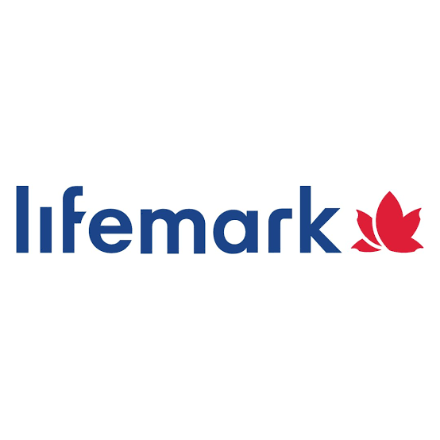
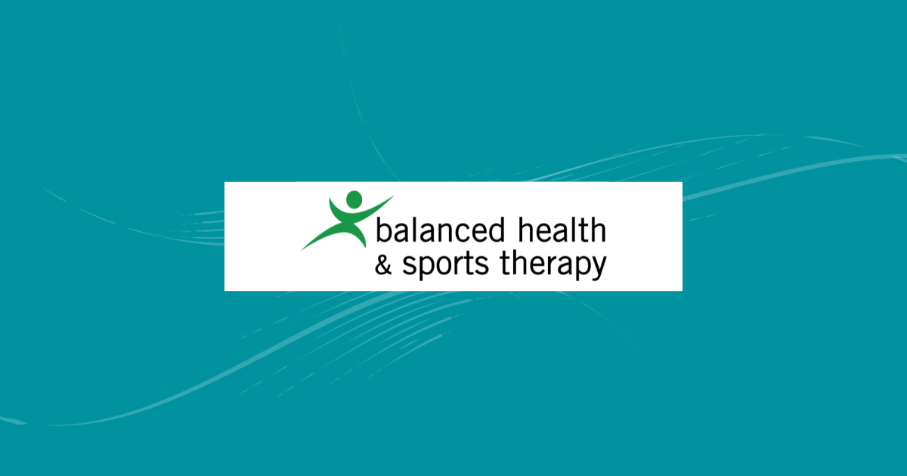
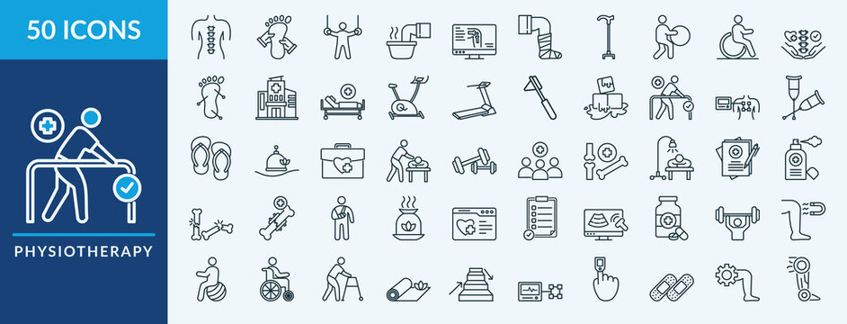

Volunteer
I am currently a volunteer at Peter Lougheed Center’s patient care department and at the University of Calgary’s Rehabilitation Center. I often work with patients who may require assistance physically or mentally as they are recovering from injuries, managing chronic conditions or actively rebuilding their independence. Despite the difference in settings, I was able to learn a lot that can help me develop into the best version of myself in a healthcare setting, as these experiences provided me meaningful exposure to patient focused care in different healthcare settings. Through these experiences, I believe I was able to develop and further my utilization of compassion, professionalism and communication as I actively support patients through challenging periods of recovery.
At Peter Lougheed Center, I am actively supporting patients through attending to their non-medical needs and ensuring their hospital experience is more comfortable. Despite my limitations on providing assistance medically, I am able to provide comfort through companionship during long days by engaging in conversations to reduce feelings of anxiety or loneliness. Many patients are often facing a difficult period of their lives during visits to hospitals, and as a result, I actively attempt to provide a sense of comfort to ease any concerns they have. I am also able to assist nurses with non-clinical tasks to allow them to focus fully on the medical aspect of their job, thus ensuring the unit is able to function better. Nurses and healthcare aids are the backbone to any hospital, as they are required to perform countless tasks while also ensuring they do not perform any mistakes, and as a result, I actively try my best to provide any assistance when possible. Through this role, I have come to appreciate the importance of emotional support in a hospital setting, especially when patients are away from their usual routines and support systems. Through this, I learned that even small acts of presence and attentiveness can ensure a meaningful difference in how a patient experiences care. I have also come to appreciate the work of nurses and healthcare aids even more, as I am able to experience first hand the extensive workload they are required to perform, and the dedication countless healthcare professionals are to providing optimal care.
In the University of Calgary's Rehabilitation Center, I often work with patients who are actively working towards regaining function and independence. Within this setting, I am able to help guide patients through exercises and activities by explaining what they are doing, why it matters and how it helps with their recovery. Through working in this environment, I learned an important lesson in ensuring I am not overhelping. Many patients take pride in what they are still able to do on their own and actively strive to ensure they are able to not only retain their capabilities, but build upon them. Instead, I actively aim to provide support in a manner that builds confidence rather than replacing their efforts. Despite variations between patients, I am actively learning how to balance offering appropriate assistance while ensuring I am still encouraging independence, dignity and progress. These volunteering experiences have strengthened my capabilities of patient care in a supportive and respectful manner, thus deepening my appreciation for healthcare service.
Experience


Lifemark
During my time volunteering at Lifemark, I gained valuable firsthand experience and developed a deeper understanding of the various roles and responsibilities of a physiotherapist. Through direct interactions with patients, I strengthened essential interpersonal skills, including effective communication, empathy, and the ability to create a safe and comfortable environment for patients receiving treatment. Additionally, I developed practical, hands-on skills that allowed me to assist physiotherapists in delivering patient care. These included setting up patients for heat therapy and transcutaneous electrical nerve stimulation (TENS), assisting with soft tissue release techniques, assisting with different cupping techniques and gaining experience with shockwave therapy and interferential current (IFC) machines.
Beyond direct patient care, my volunteer experience at Lifemark provided me with valuable insight into the administrative and organizational responsibilities involved in physiotherapy practice. I developed a greater appreciation for the importance of accurate documentation, patient charting, and maintaining organized patient records to ensure continuity of care and effective treatment planning.
Overall, my experience at Lifemark was an invaluable opportunity that allowed me to develop both my interpersonal and practical skills while gaining a more comprehensive understanding of the physiotherapy profession. This experience helped me recognize that being a physiotherapist involves not only providing effective treatment but also building meaningful relationships with patients, maintaining professionalism, and fulfilling important administrative responsibilities. It has strengthened my interest in pursuing physiotherapy and provided me with a more mature perspective on the dedication, knowledge, and responsibilities required to succeed in the profession.
Balance Health and Sports Therapy
Currently, I am completing my practicum at Balance Health and Sports Therapy, where I have the opportunity to shadow a chiropractor and gain firsthand experience with various treatment approaches used in patient care. The chiropractor I am shadowing primarily focuses on Active Release Techniques (ART) and acupuncture, allowing me to develop a deeper understanding of these treatment methods and their applications. Throughout this experience, I have gained valuable insight into the theories and clinical reasoning behind different treatment plans, including how specific techniques are selected to address patients' individual needs. Additionally, I have had the opportunity to learn how to operate and utilize the Summus laser as a supportive treatment modality to facilitate patient recovery.
One of the most valuable lessons I have learned throughout this practicum is the difference in treatment approaches between athletes and the general population. I have observed how treatment plans for athletes are often tailored to their specific sport, with an emphasis on improving performance, optimizing movement, and supporting recovery from injuries. In contrast, treatment plans for other patients tend to focus more on pain management, restoring functional abilities, and improving their overall quality of life. Understanding these differences has helped me recognize the importance of individualized patient care and how treatment goals can vary depending on a patient's lifestyle and needs. As my practicum is still ongoing, I look forward to further expanding my knowledge and gaining additional hands-on experience.
Throughout this practicum, I have also developed a greater appreciation for the importance of a multidisciplinary approach to healthcare. Although I previously understood the theoretical benefits of collaboration between healthcare professionals, this experience has allowed me to witness its value firsthand. As Balance Health and Sports Therapy has both chiropractors and physiotherapists, I have been able to observe how these professionals work collaboratively to provide comprehensive patient care. Their different treatment approaches often complement one another, allowing patients to benefit from multiple perspectives and therapeutic techniques. Witnessing this collaboration has reinforced my understanding of how effective communication and teamwork between healthcare professionals can contribute to more comprehensive treatment plans and improved patient outcomes.
Goals

My academic goals are centered around pursuing admission into physiotherapy school, as that is where my skill set, interest, and values can be effectively utilized. When combining my growing interest in healthcare with my desire to make a meaningful difference in the lives of others, I believe physiotherapist as a career aligns with my principle due to how people are centered. Through my experience in school, volunteering and working with others, I have developed a strong appreciation for the impact health care professionals are able to have, and I want to actively contribute in the same manner. Physiotherapy is especially appealing to me as it is a combination of science, movement, rehabilitation and patient centered care, enabling practitioners to support people through both challenges and progress. In addition, it also provides the opportunity to help individuals improve their quality of life through regaining independence and confidence during a low point of their lives. It is a combination of everything I learned through all of my experiences, and I sincerely believe it is how I would want to impact people’s lives.
One of the main factors that caused me to choose physiotherapy as a carrier is due to its direct connection to improving a patient’s quality of life, one of the most meaningful aspects of healthcare to me. Throughout my life, I have experienced and witnessed first hand injuries that resulted in limited physical capabilities that directly reduced quality of life and confidence due to incapabilities of performing actions that were previously doable. Physiotherapy is not only able to treat an injury or improve function, but they are able to also rebuild confidence and help people return to their everyday activities with comfort and abilities. Even small improvements, through helping someone walk with less pain or regaining movements can significantly impact someone’s short term and long term lifestyles. This field stands out to me as it allows me to support people in a way that is both practical and personal, as I help them feel more capable and comfortable in their own bodies.
This goal actively continues to motivate me throughout my academic journey. During stressful semesters when balancing responsibilities becomes increasingly difficult, my long term vision of working in healthcare ensures I stay focused and grounded. It reminds me why I am putting in the effort now and what I am actively working towards in the future. I want to build a career centered around helping as many people as I can through improving physical function and making a positive difference in someone’s life. For me, the opportunity to improve quality of life is what makes physiotherapy such a rewarding and meaningful path to pursue.
Contact